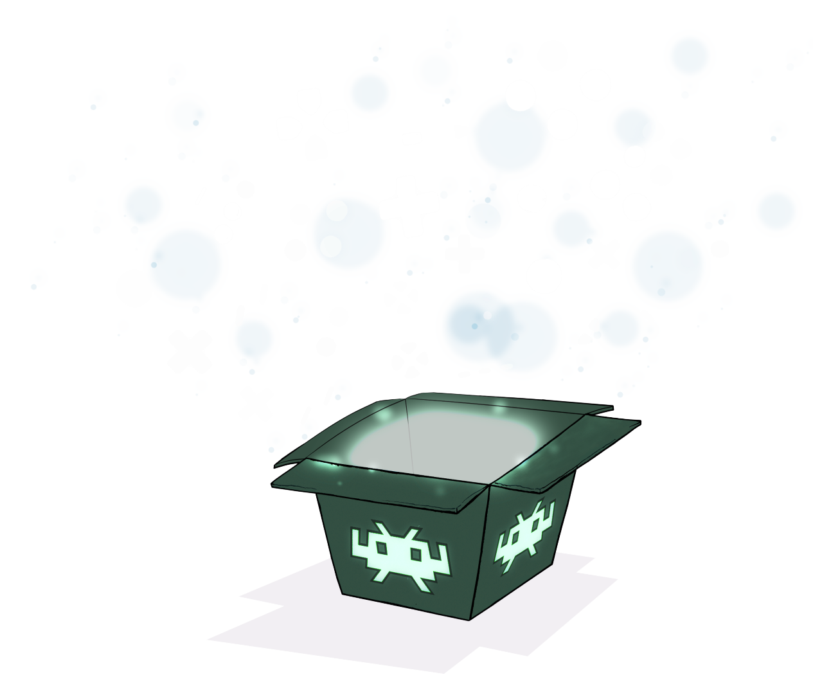

RetroArch is a frontend for emulators, game engines and media players.
Get started DownloadPlay classic games on a wide range of computer hardware and game consoles from within its polished graphical interface with unified settings, so configuration is only done once.
You can even use your original game discs (CDs/DVDs, etc.) with RetroArch!